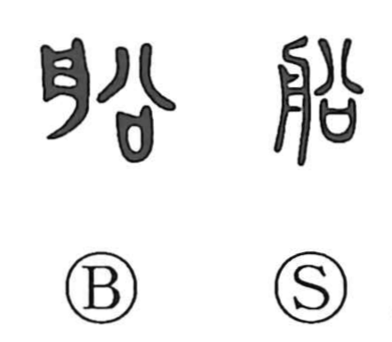

船

Kun: fune, funa | On: sen
boat ・ ship
Explanation
Shirakawa treats 船 as a phono-semantic character: the semantic element 舟, “boat,” is paired with the phonetic 㕣, read en, which underlies the on reading sen. In related graphs such as 沿 (“to go along”), 㕣 carries the sense of following a course, so 船 evokes a vessel moving with a current, whether upstream or downstream. The Yue Jue Shu records the Yue term 須らせ for 船, suggesting an old pronunciation that may be echoed in Japanese shurabune, a barge used to carry timber or stones.